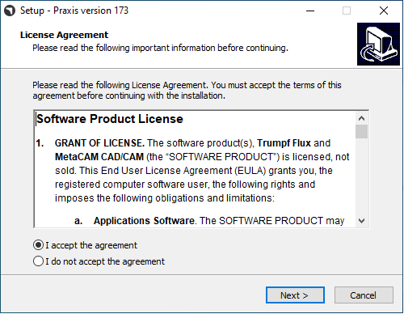
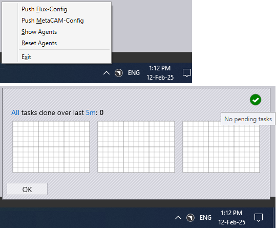

Εγκατάσταση Server
Ακολουθήστε τις οδηγίες για να εγκαταστήσετε τον TruSmartCAM Server μαζί με το SQL.
|
Δικαιώματα Διαχειριστή
Για την εκτέλεση αυτής της εγκατάστασης, ο χρήστης πρέπει να έχει δικαιώματα διαχειριστή. |
-
Εκτελέστε το Setup.TruSmartCAM.<version>.exe για να ξεκινήσετε την εγκατάσταση.
| Το Version είναι ένας αριθμός. |
-
Διαβάστε τη συμφωνία άδειας χρήσης και επιλέξτε I accept the agreement και στη συνέχεια Κάντε κλικ στο Επόμενο .

Βήμα 1 : Τοποθεσία Εγκατάστασης
-
Αναφέρετε τον κατάλογο εγκατάστασης ή αποδεχτείτε την προεπιλογή εγκατάστασης
C:\Program Files\Metamation\Praxisκαι κάντε κλικ στο Επόμενο.-
C:\Program Files\Metamation\Praxis- Ο φάκελος εγκατάστασης θα έχει τους ακόλουθους φακέλους : Bin, MetaCAM, Samples και Tracker. -
C:\Program Data\Metamation- Ο φάκελος δεδομένων θα έχει τους ακόλουθους φακέλους : TruSmartCAM, TecZone και MetaCAM.
-

Βήμα 2 : Επιλογή Στοιχείων
| Τύπος Εγκατάστασης | Στοιχεία |
|---|---|
Full |
Server + Desktop client + Engine |
Client |
Desktop Client |
Server |
Server + Desktop client |
Station |
Επιλέγει όλα τα Stations Terminal όπως TecZone, MetaCAM, RightAngle(Bend Controller), Vulcan(Laser Machine Controller) |
Custom |
Επιλέγεται από την επιλογή του χρήστη. |
-
Επιλέξτε Full Installation. Επιλέξτε Code Senders και Bend Code Senders από τα TruSmartCAM Tools. Τώρα ο Τύπος Εγκατάστασης αλλάζει σε Προσαρμοσμένο. Κάντε κλικ στο Επόμενο.

Βήμα 3 : Επιλογή Εγκατάστασης SQL Server
|
Η εγκατάσταση του SQL Express 2022 απαιτείται μόνο για τον TruSmartCAM Server. Αυτή η επιλογή δεν είναι διαθέσιμη για εγκαταστάσεις Client και Sync. Επίσης αυτό είναι Επιλεγμένο και εγκαθίσταται για πρώτη φορά και μπορεί να αγνοηθεί στη συνέχεια. Εάν έχει ήδη εγκατασταθεί το SQL στον TruSmartCAM server, ο χρήστης μπορεί να αγνοήσει το Βήμα 3. |
-
Στο Select Additional Tasks : Κάντε κλικ στο Install SQL Express και Κάντε κλικ στο Επόμενο.
-
Στο Ready to Install : Συνοψίστε όλες τις λειτουργίες εγκατάστασης και Κάντε κλικ στο Install.

Βήμα 4 : Εγκατάσταση SQL Server
Μόλις εγκατασταθούν τα στοιχεία του TruSmartCAM, ο installer προχωρά στην εγκατάσταση του SQL server. Αποδεχτείτε τη Συμφωνία Άδειας Χρήσης για να συνεχίσετε και εγκαταστήστε το SQL express με τις προεπιλεγμένες επιλογές.

Μόλις ολοκληρωθεί η εγκατάσταση, Κάντε κλικ στο Close και ολοκληρώστε την εγκατάσταση.

| Ανάλογα με την έκδοση των Windows, το κλείσιμο της εγκατάστασης του SQL μπορεί να ζητήσει επανεκκίνηση. |
Βήμα 5 : Συντομεύσεις στην Επιφάνεια Εργασίας των Windows
-
Μετά την εγκατάσταση του SQL, εάν το Σύστημα δεν επανεκκινηθεί, τότε επιλέξτε το πλαίσιο ελέγχου Launch TruSmartCAM και Κάντε κλικ στο Finish.
-
Εάν το Σύστημα επανεκκινηθεί, τότε Εκκινήστε το εικονίδιο συντόμευσης TruSmartCAM στην Επιφάνεια Εργασίας ή πληκτρολογήστε TruSmartCAM στο Windows Start Program και Εκτελέστε ως διαχειριστής.
| Εγκατάσταση Server : Τα εικονίδια συντόμευσης TruSmartCAM και TruSmartCAM License είναι διαθέσιμα στην Επιφάνεια Εργασίας. + Εγκατάσταση Client/SYNC : Μόνο το εικονίδιο συντόμευσης TruSmartCAM είναι διαθέσιμο στην Επιφάνεια Εργασίας. |

Βήμα 6 : Εγγραφή Άδειας Χρήσης
-
Στο πεδίο Serial Number, πληκτρολογήστε το κλειδί Serial του TruSmartCAM που παρέχεται από την Trumpf Metamation Service Team. Πληκτρολογήστε το <Όνομα Εταιρείας> στο πεδίο "Registered to" και το E-Mail. Κάντε κλικ στο OK.

|
Σε περίπτωση που το τείχος προστασίας Δικτύου αποκλείει την εγγραφή της άδειας χρήσης ή Δεν υπάρχει internet στον TruSmartCAM Server PC, τότε η άδεια χρήσης του TruSmartCAM γίνεται με Offline ενεργοποίηση. Στείλτε με email το Prax.request από τον φάκελο C:\ProgramData\Metamation\Praxis στην Trumpf Metamation Service Team. Η Trumpf Metamation Team θα παράσχει το Prax.lock που πρέπει να τοποθετηθεί σε αυτόν τον φάκελο. |
Βήμα 7 : Αρχική εφάπαξ Διαμόρφωση
-
Πληκτρολογήστε το Όνομα Βάσης Δεδομένων και Ορίστε την Τοποθεσία Αποθήκευσης Δεδομένων. Επιλέξτε το πλαίσιο ελέγχου Χρήση διακομιστή SQL και επιλέξτε το όνομα του SQL server για να συνδεθείτε στη Βάση Δεδομένων. Κάντε κλικ στο OK.

-
Ο TruSmartCAM Desktop Client ανοίγει εμφανίζοντας Database Connection Succeeded στο κάτω μέρος.
-
Τα αρχεία διαμόρφωσης του TruSmartCAM, TecZone και MetaCAM δημιουργήθηκαν με προεπιλεγμένα μηχανήματα config ή έναντι μηχανημάτων άδειας TruSmartCAM. Το ίδιο config θα κοινοποιείται σε όλους τους TruSmartCAM Clients.

Η οθόνη καλωσορίσματος εμφανίζεται με το Windows User LoginName ως TruSmartCAM Login και Name. Ο πρώτος Χρήστης TruSmartCAM θεωρείται Διαχειριστής ιστότοπου. Παράσχετε Email και Password. Κάντε κλικ στο OK .
Επιλέξτε το πλαίσιο ελέγχου Απομνημόνευση στοιχείων για να αποθηκεύσετε τα διαπιστευτήρια σύνδεσης για την επόμενη φορά. Η εκκαθάριση του πλαισίου ελέγχου Απομνημόνευση στοιχείων θα ζητά διάλογο σύνδεσης και κωδικού πρόσβασης κάθε φορά που εκκινείται η εφαρμογή TruSmartCAM.

Βήμα 8 : Σύνδεση στο TruSmartCAM
-
Κλείστε το TruSmartCAM και ανοίξτε το ξανά. Το σύστημα σας ζητά να εισαγάγετε τα διαπιστευτήρια σύνδεσης του TruSmartCAM.

-
Το όνομα χρήστη που συνδέθηκε εμφανίζεται δίπλα στο εικονίδιο χρήστη στην κεφαλίδα της εφαρμογής TruSmartCAM.

-
Όταν τοποθετείτε το δείκτη πάνω από το εικονίδιο χρήστη, το σύστημα εμφανίζει:

-
Τον ρόλο χρήστη (για παράδειγμα: Programmer, Admin).
-
Μια συντόμευση για αποσύνδεση: Ctrl+L.
-
-
Κάνοντας κλικ στο εικονίδιο χρήστη ανοίγει ένα μενού που σας επιτρέπει να:

-
Επεξεργασία πληροφοριών… - Ενημερώστε τα στοιχεία του προφίλ σας.
-
Αλλαγή κωδικού πρόσβασης… - Αλλάξτε τον κωδικό πρόσβασης του λογαριασμού σας.
-
Αποσύνδεση - Αποσυνδεθείτε από την εφαρμογή.
-
Διακοπή - Κλείστε το μενού χωρίς να κάνετε αλλαγές.
-
Βήμα 9 : Διαμόρφωση Μηχανημάτων Εργοστασίου
-
Άδεια TruSmartCAM [Όλα τα μηχανήματα ενεργοποιούν το bit άδειας] : Το προεπιλεγμένο Μηχάνημα TruSmartCAM και το Υλικό θεωρούνται ως Διαμόρφωση Εργοστασίου.
-
Άδεια TruSmartCAM [Χωρίς demo και λίγα bit μηχανημάτων ενεργοποιημένα] : Αυτά τα Λίγα μηχανήματα και το προεπιλεγμένο Υλικό θεωρούνται ως Διαμόρφωση Εργοστασίου.
-
(Open → Import) ένα νέο Εξάρτημα από το
C:\Program Files\Metamation\Praxis\Samples\Partsκαι επαληθεύστε εάν το Εξάρτημα εισάγεται με επιτυχία.

Σημείωση 1 : TruSmartCAM Monitor
-
TruSmartCAM Monitor με Εγκατάσταση Engine (δικαιώματα Site admin):
-
Το TruSmartCAM Monitor με Engine μαζί με δικαιώματα TruSmartCAM Site Admin θα έχει τις ακόλουθες επιλογές:
-
Ώθηση διαμόρφωσης TruSmartCAM, διαμόρφωσης TecZone, MetaCAM σε όλους τους TruSmartCAM Clients. Επίσης έχει δικαιώματα για δημιουργία Νέας Σύνδεσης Χρήστη TruSmartCAM.
-
Το Show Agents θα δείξει το σύνολο των διαθέσιμων engine για εκτέλεση εργασίας αυτοματισμού που είναι έναντι της Άδειας TruSmartCAM.
-
-

-
TruSmartCAM Monitor χωρίς Εγκατάσταση Engine (δικαιώματα Site admin):

-
TruSmartCAM Monitor χωρίς Εγκατάσταση Engine (Δικαιώματα χωρίς Site Admin):

|
Ο υπολογιστής που εκτελεί την εφαρμογή TruSmartCAM πρέπει να έχει εγκατεστημένο το στοιχείο Engine TruSmartCAM [Server PC ή σε οποιαδήποτε εγκατάσταση Client]. Ο υπολογιστής που έχει εγκατεστημένο το στοιχείο Engine TruSmartCAM πρέπει να εκτελείται 24x7 για να εκτελούνται όλες οι εργασίες αυτοματισμού. |
Σημείωση 2 : Lock Tracker
-
Κάντε κλικ στη συντόμευση TruSmartCAM License που είναι διαθέσιμη στην Επιφάνεια Εργασίας του TruSmartCAM Server. Εναλλακτικά, ανοίξτε τη διεύθυνση url http://localhost:7171/metamation/locktrack σε οποιοδήποτε πρόγραμμα περιήγησης web.
Αυτό θα ανοίξει τη μονάδα Lock Tracker που έχει πληροφορίες Άδειας χρήσης, πληροφορίες τρέχουσας συνεδρίας TruSmartCAM και Log.
LockTracker HOME Page : Αυτό δείχνει τον Αριθμό Serial του TruSmartCAM, πληροφορίες Λήξης Serial και πληροφορίες διαθέσιμων bits Serial.

LockTracker SESSIONS Page : Πληροφορίες σύνδεσης τρέχοντος TruSmartCAM Server όπως TruSmartCAM Desktop client PC, PMonitor, κατάσταση PEngine.

LockTracker LOGs Page : Έναρξη client TruSmartCAM και αποσύνδεση | Έναρξη Pmonitor και κατάσταση σύνδεσης/αποσύνδεσης PEngine κ.λπ., μπορούν να προβληθούν σε αυτήν τη σελίδα Logs.

Σημείωση 3 : OpenGL
-
Η εφαρμογή TruSmartCAM κατά το άνοιγμα κλείνει αμέσως και επίσης το pmonitor δεν εμφανίζεται στη γραμμή εργασιών.
-
Αυτό αντιπροσωπεύει πρόβλημα OpenGL.
-
Ένας άλλος τρόπος για να το επιβεβαιώσετε: Ανοίξτε το C:\Program Files\Metamation\Praxis\Bin\Flux.exe που εμφανίζει διάλογο σφάλματος σχετικά με το πρόβλημα OpenGL.

-
Ενημερώστε το C:\ProgramData\Metamation\Praxis\Prax.ini, ενότητα options με GLVersion=1 για να ανοίξει η εφαρμογή TruSmartCAM με επιτυχία.
[Options]
GLVersion=1.0